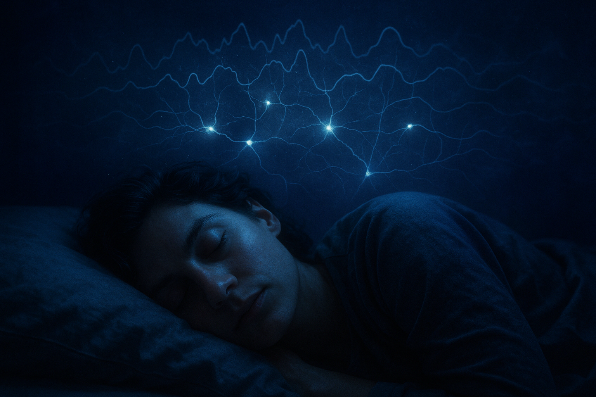

The Science of the Unconscious Mind
Every night, you die. And every morning, you're reborn. That's not poetry — it's biology. Sleep is one of the most profound enigmas in all of science. We spend roughly a third of our lives in it. Sleep deprivation kills faster than starvation. Every animal that has ever been studied sleeps. And yet, despite decades of research, the deepest question — why do we dream? — remains genuinely unanswered. We have clues. We have theories. But the full story? We're still in the dark.
The basic puzzle: Sleep is deeply dangerous from a survival standpoint. You're unconscious, immobile, vulnerable to predators. Evolution doesn't usually tolerate such a costly vulnerability without a very good reason. Whatever sleep does for us, it must be extraordinary — because the cost of not sleeping is catastrophic.
Sleep isn't uniform. A typical night cycles through distinct stages, each with its own brain activity, each doing something different:
One full cycle takes about 90-110 minutes. Through the night, the ratio shifts: early cycles are heavy on deep NREM, later cycles are heavy on REM. This is why you often wake from vivid dreams in the last hour of sleep.
Here's something remarkable: the brain doesn't have a lymphatic system. The lymphatic system — the body's waste-clearance network — doesn't extend into the brain or spinal cord. For decades, nobody knew how the brain cleaned itself of the metabolic waste products it produces during waking hours.
The answer, discovered in 2012 by Maiken Nedergaard's lab at the University of Rochester, is the glymphatic system (the name comes from "glial" cells + "lymphatic"). It's a network of channels around the brain's blood vessels that, during sleep, flush cerebrospinal fluid through brain tissue — washing away neurotoxic waste products including beta-amyloid and tau, the proteins associated with Alzheimer's disease. The glymphatic system is primarily active during sleep. In fact, the brain's neurons shrink by about 60% during slow-wave sleep to allow fluid to flow more freely through the channels.
The cleaning hypothesis: One core function of sleep is simply maintenance — the brain is too busy during waking hours to spend resources on housekeeping. Sleep is when the brain opens its waste-management doors and runs the dishwasher. This may be why chronic sleep deprivation is so strongly linked to neurodegenerative disease. You're not just tired — you're not cleaning the brain.
Sleep and memory are deeply intertwined, but the relationship is more complicated than the simple idea that "sleep consolidates memories." The reality is messier and more interesting.
During NREM slow-wave sleep, the hippocampus — the brain's short-term memory buffer — replays the day's experiences to the neocortex, which is the brain's long-term storage. Think of the hippocampus as a recorder that's been taking notes all day, and slow-wave sleep is when it transfers those files to permanent storage. Sleep spindles, those bursts of activity in Stage 2, appear to coordinate this transfer.
REM sleep seems to handle a different kind of memory: emotional and procedural. The brain processes emotional experiences during REM, chemically softening the emotional charge attached to memories. This may explain why sleep deprivation makes people emotionally volatile — they haven't had the REM sessions that normally defang difficult emotional experiences.
But here's the honest scientific state: the evidence for sleep-assisted memory consolidation is real, but sometimes contradictory. Some studies show dramatic benefits; others show modest or absent effects. The field is actively debated. The textbook claim that "sleep is essential for memory consolidation" is more of a working model than a settled fact.
REM is where things get strange. During REM, the motor cortex fires almost as actively as during waking — you're "moving" in your brain. But the pons in the brainstem sends signals that paralyze most skeletal muscles. This is called muscle atonia. It's why you can't act out your dreams (most of the time). Without this mechanism, REM sleep behavior disorder would be the norm.
The activation-synthesis theory, proposed by J. Allan Hobson and Robert McCarley in 1977, argued that dreams are essentially nonsense: the brainstem generates random signals during REM, and the cortex tries to make sense of them by weaving a narrative. Dreams are the cortex's best guess at interpreting chaotic internal signals. No hidden meaning. No Freudian symbols. Just neural noise dressed up as a story by a brain that's expert at finding patterns.
This was revolutionary — and controversial. Freud argued dreams were the "royal road to the unconscious," filled with symbolic meaning about repressed desires. The activation-synthesis view directly challenged this. Modern neuroscience tends to side with Hobson on mechanism, but acknowledges that dream content often reflects waking life experiences, suggesting some top-down influence rather than pure bottom-up noise. The debate isn't fully settled.
Why do we forget our dreams? Part of it is neurochemical. During REM, the prefrontal cortex — responsible for attention, memory encoding, and logical thinking — is relatively inactive. Without active encoding, the vivid scenes of REM fail to get transferred to long-term memory. You need to wake up quickly after a dream to have a chance at remembering it. Within minutes, it's gone.
In RBD, the muscle paralysis of REM fails. People physically act out their dreams — often violently, thrashing, kicking, punching. They can injure themselves or their partners. The dreams tend to be intense and action-filled. RBD is strongly associated with neurodegenerative diseases, particularly Parkinson's disease and Lewy body dementia — sometimes appearing years or decades before other symptoms. It's thought that the neural pathways that coordinate REM atonia degenerate early in these diseases.
Narcolepsy is a dysfunction of the boundary between sleep and waking. People with narcolepsy have sudden, uncontrollable transitions into sleep or muscle paralysis (cataplexy) triggered by strong emotions. They can fall asleep mid-sentence. They enter REM almost instantly, sometimes within minutes of falling asleep, rather than the usual 90-minute delay. The cause is thought to be loss of hypocretin-producing neurons in the hypothalamus — likely an autoimmune process. It's a disorder that reveals just how fragile the threshold between consciousness and unconsciousness really is.
You've been awake, but you can't move. And there might be something in the room — a presence, a figure. This is sleep paralysis, and it occurs when you wake up during REM before atonia has fully lifted. You're conscious but still partially paralyzed. The brain, desperate to explain the situation, generates vivid hallucinations of an intruder or a weight on the chest. Across cultures, this phenomenon has inspired accounts of demons, ghosts, and alien abductions. In reality, it's just the brain rebooting.
In a lucid dream, you're aware that you're dreaming. You might be mid-flight over a city, realize it's a dream, and decide to change direction. For roughly 55% of adults, this has happened at least once. About 23% experience it at least monthly.
What's happening in the brain during lucid dreaming? Neuroimaging shows that certain regions that are quiet during normal REM — particularly the prefrontal cortex (involved in self-reflection and meta-cognition) and the precuneus (involved in the sense of self) — activate during lucid episodes. The dreaming brain wakes up just enough to realize it's dreaming, while remaining in the REM state. It's consciousness observing its own internal simulation.
Researchers have even established two-way communication with lucid dreamers — subjects can answer yes/no questions by moving their eyes in pre-arranged patterns while in REM, confirming that lucidity occurs in genuine REM sleep, not some hybrid state.
Probably, yes. REM sleep is widespread in the animal kingdom. Dogs and cats show paw movements, twitching, whimpers during REM — behaviors that strongly suggest they're chasing something in their sleep. Rats trained on tasks show brain activity during sleep that replays the task. Even reptiles and fish show sleep states that resemble REM. The question isn't really whether animals dream — it's what they dream about, and whether their experience is anything like ours. The honest answer: we don't know.
The deepest irony: The thing we spend a third of our lives doing, and the thing that kills us fastest without, remains one of the least understood aspects of human biology. We've mapped the genome, imaged the atoms in a protein, listened to the gravitational waves from black holes colliding. But what happens when you close your eyes and drift off? We're still figuring that out.